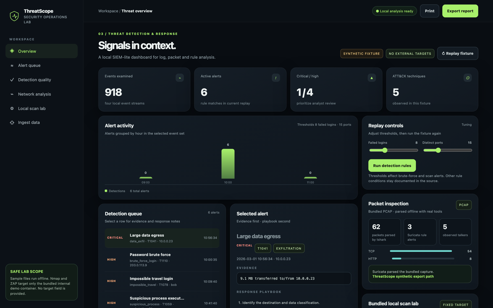
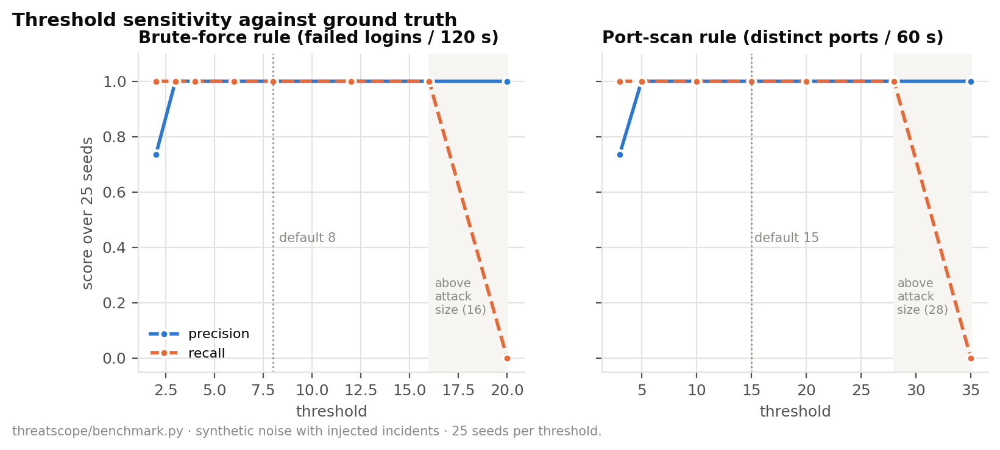
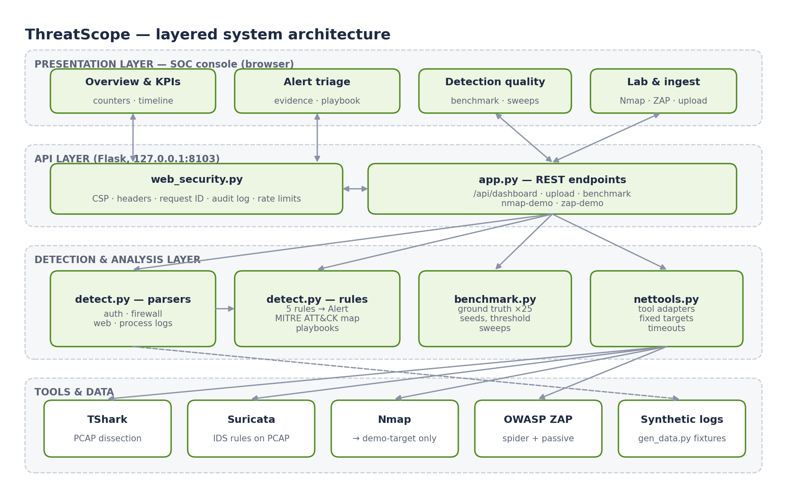
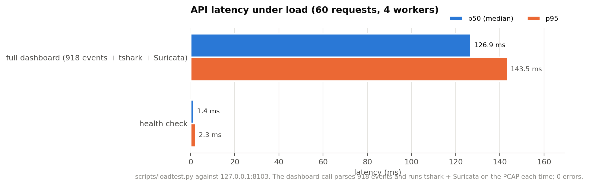

Four log parsers
auth, firewall, web and process events; malformed lines skipped safely.
ThreatScope correlates synthetic auth, firewall, web, process and packet evidence into ATT&CK-mapped alerts, runs TShark, Suricata, Nmap and OWASP ZAP inside an isolated lab, and measures every rule against ground truth.

Rules are often tuned by intuition, without measuring what they catch or how much noise they add.
Active scanners can hit systems you don't own.
Inject known incidents, score every alert, sweep thresholds; isolate tools by network design.
Readable rules, real tools, measured results.
auth, firewall, web and process events; malformed lines skipped safely.
T1110, T1078, T1046, T1041, T1059 with evidence and playbooks.
Offline PCAP dissection and IDS signatures with EVE JSON.
Fixed demo target on an internal-only network.
Precision and recall per rule over 25 seeds, plus threshold sweeps.
CSP, audit logs, rate limits and optional bearer-token auth.
Threshold 2 lets benign typos fire (9 false positives over 25 seeds); 20 misses the 16-failure attack. The default of 8 sits mid-band. The port-scan rule's band is 5–28.


Perfect scores reflect synthetic scenarios the rules were written for; the sweeps show where they break.
| Rule | TP | FP | FN | Recall |
|---|---|---|---|---|
| brute_force_login | 25 | 0 | 0 | 1.00 |
| data_exfil | 25 | 0 | 0 | 1.00 |
| impossible_travel | 25 | 0 | 0 | 1.00 |
| port_scan | 25 | 0 | 0 | 1.00 |
| suspicious_process | 50 | 0 | 0 | 1.00 |

Captured from the Docker build. Click to enlarge.
Requires Docker Desktop. Opens on loopback only.